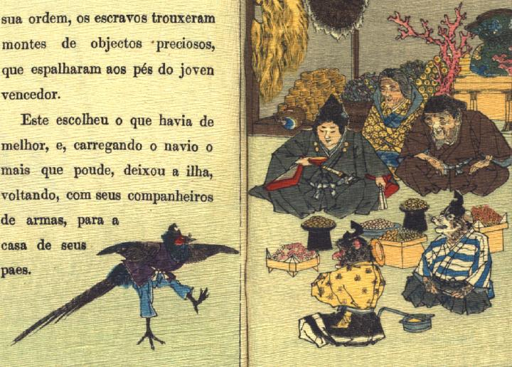

桃太郎が家に帰りつき、酒宴を催している。桃太郎の後ろには、育ての親の老人と老母が座っている。その後ろには鬼ヶ島から持ってきた宝物が積まれている。犬と猿は座っている。雉が舞を披露しており、皆がそれを見ている。
著作者：J.E.de Campos／出典：親書誌：U426_nichibunken_0115：Momotaro／日付：2006／資源識別子：U426_nichibunken_0115_0006_0000
Copyright (c)2010- International Research Center for Japanese Studies, Kyoto, Japan. All rights reserved.